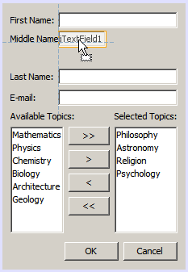

Apache NetBeans (incubating)
Apache NetBeans (incubating)Just released!
Поддержка редактирования промежутков в конструкторе графического интерфейса пользователя NetBeans
Ян Лагода (Jan Lahoda), Алена Сташкова (Alyona Stashkova)
Компоновка контейнера в режиме 'Свободное проектирование' состоит из компонентов и промежутков между этими компонентами. И компоненты, и промежутки визуализированы в представлении 'Проектирование' конструктора графического интерфейса пользователя. IDE NetBeans позволяет редактировать промежутки напрямую в конструкторе графического интерфейса пользователя.
В этом учебном курсе описывается использование редактирования промежутков для вставки новых компонентов пользовательского интерфейса между другими компонентами, а также простое центрирование компонентов вокруг фрейма в конструкторе графического интерфейса пользователя NetBeans без влияния на работу базового диспетчера компоновки. Этот учебный курс разработан как руководство для описания способа выполнения изменений в существующей форме в режиме 'Свободное проектирование' для реализации специальной целевой компоновки, необходимой для проекта.

Figure 1. Содержимое на этой странице применимо к IDE NetBeans 7.2, 7.3, 7.4 и 8.0
Для работы с этим учебным курсом требуется следующее программное обеспечение и материалы.
| Программное обеспечение или материал | Требуемая версия |
|---|---|
7.2, 7.3, 7.4 или 8.0 |
|
Версия 6, 7 или 8 |
|
Архив с исходными файлами, содержащими начальную и целевую компоновки учебного курса. |
Примечания
-
Проект, используемый в качестве отправной точки для данного курса, можно загрузить в форме архива
.zip. -
В данном руководстве основное внимание уделено созданию структуры контейнера. Добавление функциональных возможностей к графическому интерфейсу выходит за его рамки.
-
Для включения и выключения визуализации промежутков используйте параметр
Визуализировать дополнительные сведения о компоновкепосле выбораСервис>Параметры>Java>Конструктор графического интерфейса пользователяв главном меню IDE'.
Открытие примера проекта
-
Загрузите и разарвируйте архив GapSupport.zip в любую папку на своем компьютере.
-
В главном меню IDE NetBeans выберите
Файл>Открыть проект, перейдите к папке, содержащей разархивированные файлы с проектомGapSupport, разархивированном в предыдущем шаге. -
Нажмите кнопку "Открыть проект". Окно "Projects" (Проекты) должно выглядеть следующим образом:

-
Дважды щелкните файл
Initial.java. В конструкторе графического интерфейса откроется образец формы в режиме конструктора.

Примечание. Можно просмотреть иерархию компонентов формы в окне навигатора, выбрав в основной панели инструментов Window > 'Навигатор'.

Изменение размера промежутка путем перетаскивания его краев
Рассмотрим способы редактирования промежутка путем перетаскивания его краев в представлении 'Проектирование' в среде IDE.
Чтобы добавить строку Отчество между строками Имя и Фамилия необходимо выполнить следующие шаги:
-
Щелкните промежуток между метками
ИмяиФамилия. Промежуток выделяется зеленым.

-
Наведите курсор мыши на нижнюю часть выделенного промежутка. Указатель будет преобразован в вертикальный указатель с поддержкой изменения размера.

-
Увеличить выбранный промежуток до 50 нажатием левой кнопки мыши, перетаскиванием указателя вниз, после чего следует отжать левую кнопку мыши. Новый размер промежутка отображается в подсказке.

-
Добавить новую метку в созданный промежуток, перетащив его из раздела 'Элементы управления Swing' палитры и отпустив его таким образом, чтобы левая граница была выровнена с левой границей метки
Имяа ее верхняя граница содержала указанный предпочитаемый промежуток из строкиИмя.

-
Дважды щелкните метку и измените текст метки на
Отчество:.

-
Добавьте новое текстовое поле к правой стороне метки
Отчество:перетащив его из раздела 'Элементы управления Swing' палитры и отпустив его, таким образом, чтобы его базовая линия была выровнена с меткойОтчество, а левая граница была выровнена с другими текстовыми полями.

-
Перетащите правую границу текстового поля для выравнивания его с правой границей других текстовых полей.

-
Щелкните правой кнопкой мыши текст внутри текстового поля и выбрав 'Редактировать текст' во всплывающем меню. Удалите текст.
Строка Отчество вставлена между компонентами формы.

Изменение промежутка с помощью колесика мыши
Среда IDE позволяет изменить промежуток щелчком мыши и последующей прокруткой колесиком мыши для задания точного размера промежутка.
Для удаление оставшегося пространства между строками Отчество и Фаилия щелкните промежуток ниже и уменьшите высоту промежутка путем прокрутки колесика мыши вниз и задания нового размера равным малому по умолчанию .
Примечание. Конструктор графического интерфейса пользователя NetBeans поддерживает три рекомендуемых промежутка для размещения компонентов - малый по умолчанию , средний по умолчанию и большой по умолчанию .

Размер промежутка между компонентами формы можно изменить с помощью колесика мыши и использование рекомендованного промежутка.

Изменение промежутков рядом с компонентами
Можно выполнить центрирование компонента, заключив его в два идентичных промежутка, которые были ранее помечены как поддерживающие изменение размера.
Примечание. Контейнер используется для указания местоположения центрирования компонентов. Можно отцентрировать кнопки, не добавляя их к новой панели, но это трудно сделать в конструкторе графического интерфейса пользователя и полученная компоновка будет отличаться некоторой ненадежностью. Поэтому мы рекомендуем включать компонент, отцентрированный на панели там, где это возможно.
Для включения кнопок и промежутков с поддержкой изменения размера в отдельный контейнер выполните следующие действия:
-
Выберите в форме все четыре кнопки.
-
Щелкните правой кнопкой мыши выборку и выберите
Заключить в>Панельво всплывающем меню.

Кнопки будут добавлены в контейнер.

Чтобы удалить новые созданные промежутки пробелы слева и справа от кнопок, выполните следующие шаги:
-
Щелкните правой кнопкой мыши одну из кнопок и выберите 'Изменить пространство компоновки' во всплывающем меню. Отображается диалоговое окно 'Изменить пространство компоновки'.

-
Задайте размер левого и правого промежутка равным 0 и нажмите OK. Промежутки справа и слева от кнопок удаляются с помощью диалогового окна 'Изменить пространство компоновки'.

Чтобы включить для промежутков выше и ниже контейнера поддержку изменения размера, выполните следующие действия:
-
Дважды щелкните промежуток в нижней части последней кнопки. Отображается диалоговое окно 'Изменить пространство компоновки'.
-
В диалоговом окне выберите 'Изменить пространство компоновки' выберите параметр
С поддержкой изменения размераи нажмите ОК.

-
Повторите шаги 1 и 2 для промежутка над самой верхней кнопкой. Для промежутков выше и ниже контейнера с кнопками включена поддержка изменения размера.
Центрирование кнопок в образце формы:
Перетащите нижнюю границу контейнера с кнопками для выравнивания с нижними границами списков, как показано ниже:

Контейнер растягивается для соответствия высоте списков Доступные темы и Выбранные темы . Кнопки центрируются в пространстве, определенном включающим контейнером, поскольку окружающие промежутки были помечены как поддерживающие изменение размера.

Заключение
В этом учебном руководстве была усовершенствована простая форма. Этот учебный курс разработан как руководство для описания способа выполнения изменений в существующей форме в режиме 'Свободное проектирование' для реализации специальной целевой компоновки, необходимой для проекта.
Дополнительные сведения
Изучение учебного курса 'Поддержка редактирования промежутков в конструкторе графического интерфейса пользователя NetBeans' завершено. Сведения о добавлении функциональных возможностей к создаваемому графическому интерфейсу приведены в разделах:
-
Реализация графических интерфейсов Java в документе Разработка приложений в IDE NetBeans
-
+Учебная карта по приложениям с графическим интерфейсом Java +